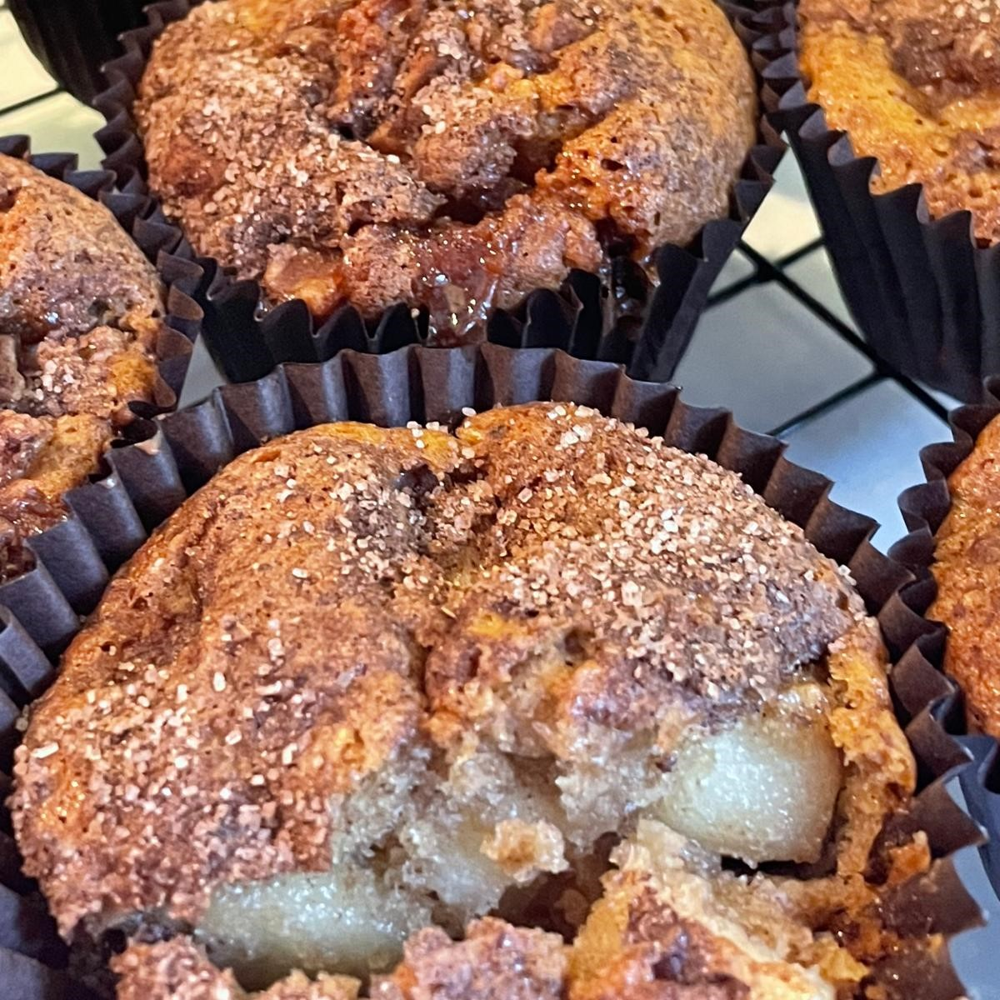

Apple and Cinnamon Muffins

- Prep time: 20mins
- Cook time: 20mins
- Servings: 12muffins
Autumn classic that will leave the kitchen smelling like the season!
Ingredients:
- 3-4 medium sized apples
- 2 tbsp lemon juice
- 2 tbsp granulated sugar
- 4 tsp cinnamon
- 250g plain flour
- 3 tsp baking powder
- 150g brown sugar
- 1 pinch of salt
- 2 eggs
- 125ml vegetable oil
- 150ml full fat milk
- 1 tsp vanilla extract
Method:
- Preheat the oven to 180C and line a 12 muffin baking tray with muffin paper cases.
- Peel the apples, core and chop into small cubes.
- Toss the apples in a bowl with the lemon juice and 1 tsp cinnamon. Set aside.
- In a small bowl, mix the white granulated sugar and 2 tsp cinnamon. Set aside.
- Mix the flour, baking powder, brown sugar, salt, and the remaining cinnamon. Set aside.
- In a large bowl,whisk the eggs, oil, milk, and vanilla extract well.
- Add the flour mixture, one tablespoon at a time to the egg mixture and incorporate.
- Fold in the cubed apples.
- Place the batter in the prepared muffin tin.
- Sprinkle each muffin iwth the sugar cinnamon topping.
- Bake the muffins for 20-23 mins or until golden.
- Leave the muffins in the muffin pan for 5 mins then remove and place on a wire rack to cool completely